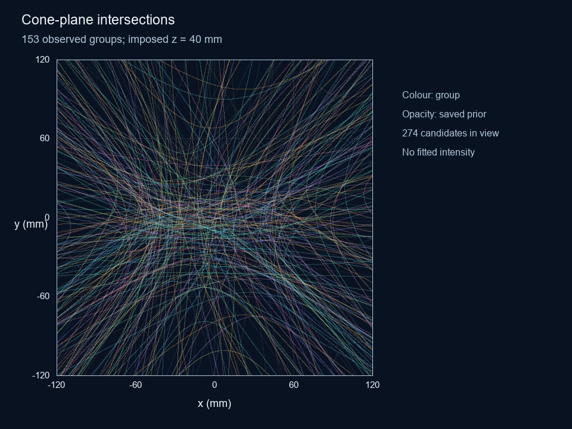
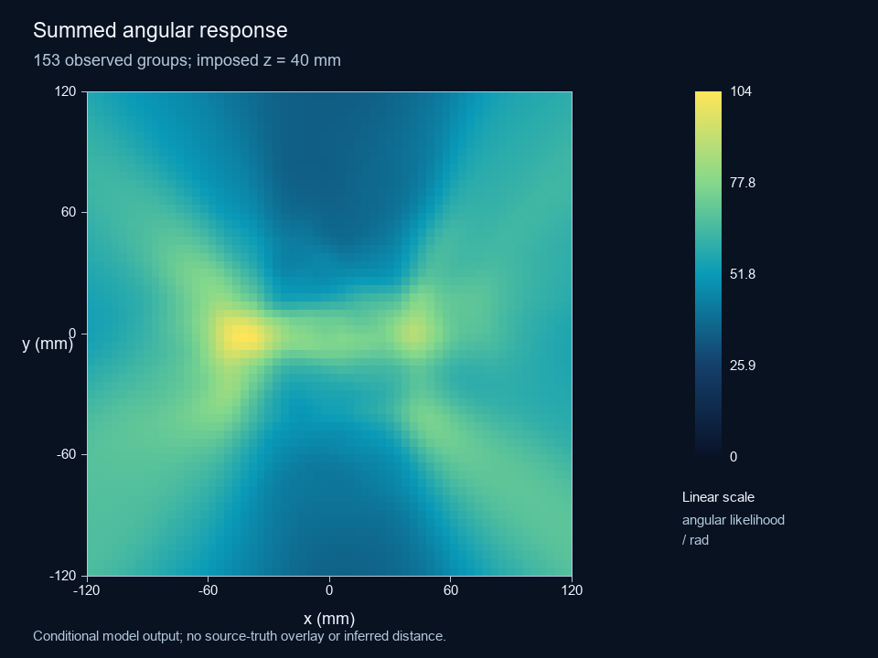

All selected energies
153 groups · 287 candidate cones. 274 candidate intersections enter the displayed square.

Curves are sampled from the saved cones. Colour identifies a group; opacity follows its candidate prior. Full size

Saved candidate responses added with their priors. Linear colour scale, angular likelihood per radian. Full size

Conditional source mass per grid cell, using the same selected candidates and retained unresolved weight. Full size